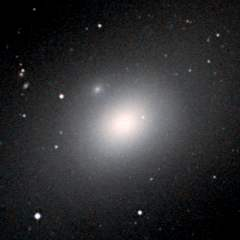
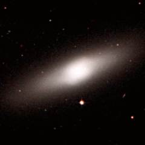
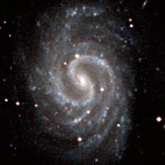

The Virgo cluster is a massive cluster of galaxies which dominates the Virgo supercluster. There are roughly 2000 galaxies in this cluster (although ninety percent of them are dwarf galaxies). This cluster has a diameter of approximately 15 million light years which is not much larger than our Local Group but it contains fifty times the number of galaxies. This map shows 600 of the brightest galaxies within 7.5 degrees of the centre of the cluster - this is an arbitary border, there are many other galaxies beyond this limit especially to the south of the cluster where there are several additional galaxy groups. The 160 largest galaxies are labelled on this map. There is also a negative version of this map which may be easier to print.
Below - nine galaxies on the right side of the Virgo cluster. M98 (top-left) and NGC 4216 (top-centre) are two similar spiral galaxies seen from the same angle. M99 (top-right) is a very lop-sided spiral galaxy. NGC 4293 (middle-left) is a spiral galaxy near the top of the Virgo cluster. M100 (middle-centre) is one of the most famous spiral galaxies in the sky. NGC 4365 (middle-right) is a large elliptical galaxy near the bottom of the Virgo cluster. M84 (bottom-left) is a large elliptical galaxy near the centre of the Virgo cluster. M85 (bottom-centre) is a large lenticular galaxy further north. This galaxy shows some shell-like structure probably because it has swallowed a spiral galaxy in the past few hundred million years. M86 (bottom-right) is one of the largest elliptical galaxies in the Virgo cluster. It has a bright core surrounded by a faint but extensive halo of stars.
| M98 | NGC 4216 | M99 |
| NGC 4293 | M100 | NGC 4365 |
|  | ||
| M84 | M85 | M86 |
This is a list of the 160 largest galaxies in the Virgo cluster - this is every galaxy labelled on the above map. This list is every galaxy with an angular size greater than 1.8 arcminutes within 7.5 degrees of the centre of the cluster which at a distance of 52 million light years corresponds to every galaxy with a diameter greater than 30 thousand light years within 7 million light years from the centre. Some of these galaxies may be foreground or background galaxies in the vicinity of the cluster.
1 2 3 4 5 6 7 8 9
Name Equatorial Blue Type Size Size RV Other
Coordinates Mag (') kly km/s Names
RA Dec
IC 755 12 01.2 +14 06 14.8 SBb 2.1 30 1839
NGC 4037 12 01.4 +13 24 13.1 SBb 2.3 35 1265
NGC 4064 12 04.2 +18 27 12.3 SBa 4.0 60 1252
NGC 4124 12 08.2 +10 23 12.5 S0 3.2 50 1993
UGC 7170 12 10.6 +18 50 14.9 Sc 3.0 45 2771
NGC 4152 12 10.6 +16 02 13.0 SBc 1.8 30 2490
NGC 4168 12 12.3 +13 12 12.2 E 2.7 40 2639
IC 769 12 12.5 +12 07 13.4 SBbc 2.6 40 2545
NGC 4178 12 12.8 +10 52 12.1 SBcd 4.9 75 712
NGC 4189 12 13.8 +13 25 12.5 SBc 2.5 35 2442
M98 12 13.8 +14 54 10.9 SBb 9.8 150 184 NGC 4192
NGC 4193 12 13.9 +13 10 13.3 SBbc 2.2 35 2804
UGC 7239 12 14.2 +07 47 13.9 Irr 2.1 30 1563
NGC 4197 12 14.6 +05 48 13.6 Sc 3.2 50 2406
IC 3061 12 15.1 +14 02 14.4 SBc 2.2 35 2644
NGC 4206 12 15.3 +13 01 12.8 Sbc 5.2 80 1031
NGC 4212 12 15.7 +13 54 11.9 Sc 3.1 45 245
NGC 4216 12 15.9 +13 09 10.9 SBb 7.9 120 459
NGC 4215 12 15.9 +06 24 13.0 S0 1.9 30 2412
NGC 4222 12 16.4 +13 18 13.9 Sc 3.2 50 557
NGC 4224 12 16.6 +07 28 13.0 Sa 2.5 40 2937
NGC 4233 12 17.1 +07 37 12.9 S0 2.3 35 2699
IC 3099 12 17.2 +12 27 15.1 Sc 1.9 30 2462
NGC 4235 12 17.2 +07 11 12.6 Sa 3.8 60 2748
NGC 4237 12 17.2 +15 19 12.5 SBbc 2.1 30 1188
IC 3102 12 17.4 +06 41 13.1 S0 2.4 35 2577
M99 12 18.8 +14 25 10.4 Sc 5.4 80 2735 NGC 4254
NGC 4260 12 19.4 +06 06 12.7 SBa 2.5 35 2184
NGC 4261 12 19.4 +05 50 11.3 E 4.0 60 2527
NGC 4262 12 19.5 +14 53 12.4 E 1.9 30 1683
NGC 4266 12 19.7 +05 32 14.3 SBa 1.9 30 340
NGC 4267 12 19.8 +12 48 12.0 E 3.0 45 1359
NGC 4270 12 19.8 +05 28 13.1 S0 2.0 30 2697
NGC 4273 12 19.9 +05 21 12.7 SBc 2.1 30 2723
NGC 4293 12 21.2 +18 23 11.2 Sa 5.5 85 1247
NGC 4294 12 21.3 +11 31 12.7 SBc 3.0 45 688
NGC 4298 12 21.5 +14 36 12.1 Sc 3.0 45 1464
NGC 4302 12 21.7 +14 36 12.5 Sc 4.9 75 1442
NGC 4305 12 22.1 +12 44 13.4 Sa 2.0 30 2221
NGC 4307 12 22.1 +09 03 12.8 Sb 3.5 50 1405
NGC 4309 12 22.2 +07 09 14.4 S0 1.9 30 1208
NGC 4312 12 22.5 +15 32 12.5 Sab 4.7 70 474
NGC 4313 12 22.6 +11 48 12.6 Sab 3.8 60 1773
NGC 4316 12 22.7 +09 20 13.7 Sc 2.5 40 1587
M100 12 22.9 +15 49 10.1 SBbc 7.6 115 1899 NGC 4321
NGC 4324 12 23.1 +05 15 12.5 S0 2.8 45 2007
NGC 4330 12 23.3 +11 22 13.3 Sc 4.0 60 1899
NGC 4336 12 23.5 +19 26 13.2 Sa 1.9 30 1315
NGC 4339 12 23.6 +06 05 12.3 E 2.2 35 1625
NGC 4340 12 23.6 +16 43 12.1 S0 3.2 50 1236
NGC 4343 12 23.6 +06 57 13.2 Sb 2.3 35 1349
NGC 4350 12 24.0 +16 42 11.9 S0 2.9 45 1544
NGC 4351 12 24.0 +12 12 13.1 SBab 1.9 30 2644 NGC 4354
NGC 4352 12 24.1 +11 13 13.5 S0 1.9 30 2407
NGC 4356 12 24.2 +08 32 14.0 Sc 2.6 40 1468
NGC 4365 12 24.5 +07 19 10.6 E 5.8 85 1573
NGC 4371 12 24.9 +11 42 11.8 S0 4.0 60 1273
M84 12 25.1 +12 53 10.1 E 6.0 90 1239 NGC 4374
NGC 4379 12 25.2 +15 36 12.6 E 1.9 30 1372
NGC 4378 12 25.3 +04 56 12.5 Sa 2.5 40 2889
NGC 4380 12 25.4 +10 01 12.6 Sab 3.2 50 1301
M85 12 25.4 +18 11 10.0 S0 7.1 105 1056 NGC 4382
NGC 4383 12 25.4 +16 28 12.6 Sa 2.0 30 2028
IC 3322A 12 25.7 +07 13 14.0 SBc 2.8 45 1331
NGC 4388 12 25.8 +12 40 11.9 Sb 5.5 85 2845
IC 3322 12 25.9 +07 33 14.2 SBc 2.3 35 1534
NGC 4394 12 25.9 +18 13 11.7 SBb 3.5 50 1234
NGC 4396 12 26.0 +15 40 13.1 Scd 3.2 50 195
NGC 4402 12 26.1 +13 07 12.6 Sb 3.5 55 562
M86 12 26.2 +12 57 9.9 E 10.2 155 37 NGC 4406
NGC 4411A 12 26.5 +08 52 13.7 SBc 1.9 30 1613
NGC 4413 12 26.5 +12 37 13.1 SBab 2.2 35 427
NGC 4411B 12 26.8 +08 53 13.2 SBc 2.5 35 1602
NGC 4417 12 26.8 +09 35 12.0 S0 3.3 50 1171
NGC 4419 12 26.9 +15 03 12.0 SBa 3.3 50 67
NGC 4421 12 27.0 +15 28 12.5 S0 2.8 45 1920
NGC 4423 12 27.1 +05 53 14.2 Sd 2.2 35 1443
UGC 7557 12 27.2 +07 16 13.5 SBm 3.0 45 1267
NGC 4424 12 27.2 +09 25 12.5 SBa 3.4 50 771
NGC 4425 12 27.2 +12 44 12.8 S0 3.0 45 2187
NGC 4430 12 27.4 +06 16 12.9 SBb 2.3 35 1782
NGC 4429 12 27.4 +11 06 11.0 S0 5.9 90 1449
PGC 40821 12 27.5 +09 36 16.4 S? 1.9 30 363 PGC 40869
NGC 4435 12 27.7 +13 05 11.7 S0 3.0 45 1111
NGC 4438 12 27.8 +13 01 11.0 Sa 8.7 130 404
NGC 4442 12 28.1 +09 48 11.3 S0 4.5 70 862
NGC 4445 12 28.3 +09 26 13.7 Sab 2.6 40 689
NGC 4450 12 28.5 +17 05 10.9 Sab 5.1 80 2273
IC 3392 12 28.7 +15 00 13.1 Sab 2.3 35 2001
NGC 4452 12 28.7 +11 45 13.0 S0 3.0 45 504
NGC 4459 12 29.0 +13 59 11.3 S0 3.8 60 1513
NGC 4461 12 29.1 +13 11 12.1 S0 3.4 50 2248
NGC 4469 12 29.5 +08 45 12.4 Sa 3.5 50 908
M49 12 29.8 +08 00 9.3 E 9.8 150 1204 NGC 4472
NGC 4473 12 29.8 +13 26 11.1 E 4.1 60 2553
NGC 4474 12 29.9 +14 04 12.5 S0 2.4 35 1915
NGC 4477 12 30.0 +13 38 11.4 S0 3.6 55 1661
M87 12 30.8 +12 23 9.6 E 8.3 125 1601 NGC 4486
NGC 4488 12 30.9 +08 22 13.2 Sa 3.6 55 1325
NGC 4492 12 31.0 +08 05 13.2 Sa 1.9 30 2099
NGC 4497 12 31.5 +11 37 13.3 S0 1.9 30 1576
NGC 4498 12 31.7 +16 51 12.8 SBc 3.0 45 1818
M88 12 32.0 +14 25 10.3 Sb 6.8 100 2599 NGC 4501
NGC 4503 12 32.1 +11 11 12.1 S0 3.5 55 1685
IC 3476 12 32.7 +14 03 13.4 Irr 2.0 30 149
NGC 4519 12 33.5 +08 39 12.5 SBcd 2.9 45 1550
NGC 4522 12 33.7 +09 10 13.1 SBc 3.5 55 2653
NGC 4523 12 33.8 +15 10 14.0 SBm 1.9 30 576
NGC 4526 12 34.1 +07 42 10.6 S0 7.1 105 931
NGC 4531 12 34.3 +13 05 12.5 S0 3.2 50 330
NGC 4532 12 34.3 +06 28 12.6 Irr 2.8 45 2344
NGC 4535 12 34.3 +08 12 10.6 SBc 6.9 105 2287
NGC 4539 12 34.6 +18 12 12.9 SBa 3.4 50 1702
NGC 4540 12 34.8 +15 33 12.5 SBc 2.1 30 1601
M91 12 35.4 +14 30 11.0 SBb 5.2 80 803 NGC 4548
NGC 4550 12 35.5 +12 13 12.5 S0 3.2 50 704
M89 12 35.7 +12 33 10.7 E 5.0 75 628 NGC 4552
NGC 4564 12 36.4 +11 26 11.9 E 3.2 50 1452
NGC 4567 12 36.5 +11 15 12.1 Sbc 2.8 40 2588
NGC 4568 12 36.6 +11 14 11.7 Sbc 4.4 65 2578
IC 3576 12 36.6 +06 37 14.0 SBm 2.3 35 1406
M90 12 36.8 +13 10 10.2 SBab 10.5 160 87 NGC 4569
NGC 4570 12 36.9 +07 15 11.8 S0 3.8 60 2061
NGC 4571 12 36.9 +14 13 11.9 Sc 3.7 55 659
NGC 4578 12 37.5 +09 33 12.4 S0 3.0 45 2600
M58 12 37.7 +11 49 10.6 SBb 5.6 85 1839 NGC 4579
NGC 4580 12 37.8 +05 22 12.9 SBab 2.0 30 1368
NGC 4596 12 39.9 +10 11 11.4 S0 4.1 60 2194
NGC 4606 12 41.0 +11 55 12.6 SBa 2.9 45 1975
NGC 4607 12 41.2 +11 53 13.8 SBb 3.0 45 2577
NGC 4608 12 41.2 +10 09 12.2 S0 3.2 50 2127
NGC 4612 12 41.5 +07 19 12.2 S0 2.4 35 2195
M59 12 42.0 +11 39 10.8 E 5.0 75 751 NGC 4621
NGC 4623 12 42.2 +07 41 13.3 S0 2.2 35 2146
NGC 4633 12 42.6 +14 21 13.8 SBd 1.8 30 604
NGC 4634 12 42.7 +14 18 13.2 SBc 2.2 35 432
NGC 4638 12 42.8 +11 27 12.1 E 2.5 35 1447
NGC 4639 12 42.9 +13 15 12.2 SBbc 3.0 45 1308
NGC 4647 12 43.5 +11 35 11.9 SBc 2.8 45 1734
M60 12 43.7 +11 33 9.8 E 7.2 110 1452 NGC 4649
NGC 4651 12 43.7 +16 24 11.4 Sc 4.0 60 1113
NGC 4654 12 43.9 +13 08 11.1 SBc 5.0 75 1349
NGC 4660 12 44.5 +11 11 12.1 E 2.1 30 1403
IC 3718 12 44.8 +12 21 14.0 Sbc 2.6 40 1167
UGC 7943 12 46.8 +05 57 13.9 SBc 2.0 30 1162
NGC 4689 12 47.8 +13 46 11.6 Sc 4.6 70 1925
NGC 4694 12 48.3 +10 59 12.3 S0 3.0 45 1495
NGC 4698 12 48.4 +08 29 11.7 Sa 3.7 55 1324
NGC 4710 12 49.6 +15 10 11.9 S0 4.9 75 1633
NGC 4713 12 50.0 +05 19 12.3 SBcd 2.4 35 977
NGC 4733 12 51.1 +10 55 12.7 E 1.9 30 1252
NGC 4746 12 51.9 +12 05 13.4 Sb 3.9 60 2094
NGC 4754 12 52.3 +11 19 11.6 S0 4.4 65 1687
NGC 4758 12 52.7 +15 51 13.6 SBm 3.0 45 1548
NGC 4762 12 52.9 +11 14 11.3 S0 7.6 115 1298
UGC 8032 12 54.7 +13 14 13.9 Sb 2.8 40 1424
IC 3881 12 54.8 +19 11 13.8 SBc 3.6 55 1217
UGC 8085 12 58.3 +14 33 14.6 SBc 2.5 40 2350
NGC 4866 12 59.4 +14 10 12.1 S0 6.3 95 2292
NGC 4880 13 00.2 +12 29 12.9 S0 3.0 45 1781
|
Column 1: The usual name of the galaxy.
Column 2: The Right Ascension for epoch 2000.
Column 3: The Declination for epoch 2000.
Column 4: The blue apparent magnitude of the galaxy.
Column 5: The galaxy type: E=Elliptical, S0=Lenticular, Sa,Sb,Sc,Sd=Spiral,
SBa,SBb,SBc,SBd=Barred Spiral, Sm,SBm,Irr=Irregular.
Column 6: The angular diameter of the galaxy (arcminutes).
Column 7: The diameter of the galaxy (thousands of light years).
Column 8: The recessional velocity (km/s) of the galaxy relative to
the cosmic microwave background.
Column 9: Other names of the galaxy.
References:
The HyperLeda Database, (2003).
Below - another nine galaxies in the Virgo cluster. NGC 4429 (top-left) is a fine example of a lenticular galaxy showing a central bulge surrounded by a disk of stars. NGC 4438 (top-centre) is a spiral galaxy near the centre of the Virgo cluster which has become disrupted by a close encounter with the lenticular galaxy NGC 4435 above it. NGC 4450 (top-right) is a spiral galaxy with smooth spiral arms. NGC 4459 (middle-left) is a lenticular galaxy seen almost face-on. M49 (middle-centre) is an elliptical galaxy and it is the largest galaxy in the southern half of the cluster. NGC 4473 (middle-right) is an elliptical galaxy with a very oval shape. M87 (bottom-left) is the very large and active galaxy at the centre of the Virgo cluster. M88 (bottom-centre) is another nice spiral galaxy. NGC 4526 (bottom-right) is a superb example of a lenticular galaxy.
| NGC 4429 | NGC 4438 | NGC 4450 |
| NGC 4459 | M49 | NGC 4473 |
|  | ||
| M87 | M88 | NGC 4526 |
It is not possible to get a good photograph of the entire Virgo cluster because the galaxies are rather faint and small objects scattered across 15 degrees of the sky. Below is photograph of the centre of the cluster showing the inner 4°x4° region. Most of the brightest objects in this picture are galaxies. The elliptical galaxy in the centre is M87. The two largest galaxies on the right are the large elliptical galaxies - M84 and M86. The three largest galaxies on the left are M89, M90 and M58. At the top edge of the picture are the two large spiral galaxies M88 and M91.
Below - nine galaxies on the left side of the Virgo cluster. NGC 4535 (top-left) and M91 (top-centre) are two fine examples of barred spiral galaxies. M89 (top-right) is another of the large elliptical galaxies near the centre of the Virgo cluster. M90 (middle-left) and M58 (middle-centre) are two similar spiral galaxies. M59 (middle-right) is a large elliptical galaxy on the left side of the Virgo cluster. M60 (bottom-left) is another elliptical galaxy on the left side of the cluster. In the same field of view is NGC 4647 - a spiral galaxy at a different distance. NGC 4654 (bottom-centre) is another spiral galaxy. NGC 4762 (bottom-right) is a bright lenticular galaxy viewed edge-on.
|  | ||
| NGC 4535 | M91 | M89 |
| M90 | M58 | M59 |
| M60 | NGC 4654 | NGC 4762 |
In the middle of the Virgo cluster is the large elliptical galaxy M87. This picture is the view of the galaxy from the Hubble Space Telescope. It shows an extraordinary jet streaming from the centre of the galaxy. This jet is more than 5000 light years long (or approximately 4 million times the diameter of our solar system). The jet consists of electrons and other sub-atomic particles which are being propelled outwards by a supermassive black hole at the centre of the galaxy. The black hole has a mass of about 2 billion solar masses, and as matter falls into the black hole it is concentrated by the intense magnetic fields around the black hole and some of it is propelled outwards to form the jet. The bright yellow glow of this galaxy is the combined light from the trillion or more stars in this galaxy. The points of light which can be seen in this image are a few of the fifteen thousand globular star clusters which belong to the galaxy.
| Properties of the Virgo Cluster | |
|---|---|
| Equatorial Coordinates | RA=12h30m Dec=+12° |
| Galactic Coordinates | l=284° b=+74° |
| Supergalactic Coordinates | L=103° B=-2° |
| Distance to the centre of the cluster | 52 million light years |
| Number of large galaxies in the cluster | 160 |
| Alternative names for the cluster | Virgo I cluster |
{kind=link}